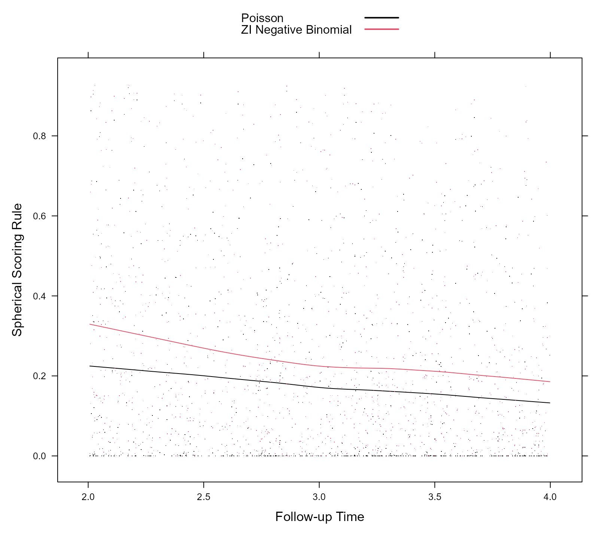
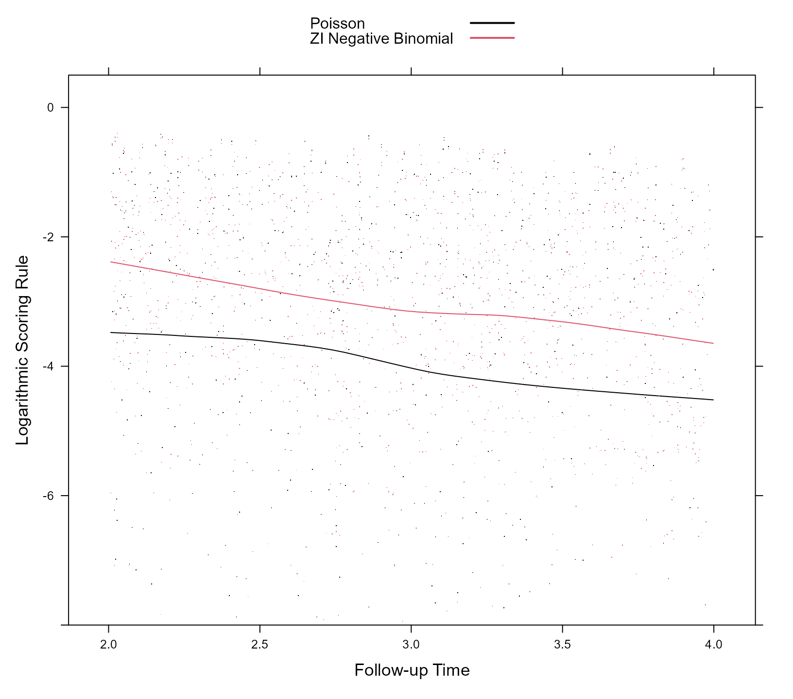

Dynamic Predictions
Dimitris Rizopoulos
2021-01-23
Source:vignettes/Dynamic_Predictions.Rmd
Dynamic_Predictions.RmdIntroduction
In the setting of longitudinal data dynamic individualized predictions are predictions for the longitudinal outcomes that are updated as extra measurements are recorded for a subject.
We start by introducing the notation for this setting. Let \(y_i\) denote the \(n_i \times 1\) longitudinal response vector for the \(i\)-th subject (\(i = 1, \ldots, n\)), with element \(y_{il}\) denoting the value of the longitudinal outcome taken at time point \(t_{il}\), \(l = 1, \ldots, n_i\). We also let \(\mathcal D_n = \{y_i; i = 1, \ldots, n\}\) denote all available longitudinal outcome information in the original sample.
We are interested in deriving predictions for a new subject \(j\) from the same population who has provided is with a set of longitudinal measurements \(\mathcal Y_j(t) = \{ y_j(t_{jl}); 0 \leq t_{jl} \leq t, l = 1, \ldots, n_j \}\). Given the fact that we observed these measurements, it is more relevant to focus on conditional subject-specific predictions. In particular, for any time \(u > t\) we are interested in the conditional mean \[ \omega_j(u \mid t) = E \{ y_j(u) \mid \mathcal Y_j(t), \mathcal D_n\}, \quad u > t. \] The time-dynamic nature of \(\omega_j(u \mid t)\) is evident because when new information is recorded for subject \(j\) at time \(t' > t\), we can update these predictions to obtain \(\omega_j(u \mid t')\), and therefore proceed in a time-dynamic manner.
Calculation of these predictions proceeds more naturally under the (asymptotic) Bayesian paradigm. Namely, \(\omega_j(u \mid t)\) is the expected value of the posterior predictive distribution \[ p\{y_j(u) \mid \mathcal Y_j(t), \mathcal D_n\} = \int p\{y_j(u) \mid \mathcal Y_j(t), \theta\} \, p(\theta \mid \mathcal D_n) \; d\theta, \] where \(p(\theta \mid \mathcal D_n)\) denotes the posterior distribution of the parameters obtained from the original sample \(\mathcal D_n\). If we have fitted the model by maximum likelihood, as it is done in the GLMMadaptive package, we can approximate this posterior distribution by a multivariate normal distribution centered at the maximum likelihood estimates, and with variance-covariance matrix the inverse of the observed information matrix.
The first term in the integrand can be further expanded into: \[\begin{eqnarray*} p\{y_j(u) \mid \mathcal Y_j(t), \theta\} & = & \int p\{y_j(u) \mid b_j, \mathcal Y_j(t), \theta\} \, p \{b_j \mid \mathcal Y_j(t), \theta\} \; db_j\\ &&\\ & = & \int p\{y_j(u) \mid b_j, \theta\} \, p \{b_j \mid \mathcal Y_j(t), \theta\} \; db_j. \end{eqnarray*}\] By combining these integral equations, we can derive a Monte Carlo scheme to estimate \(\omega_j(u \mid t)\) and its confidence interval.
Illustration
Calculation and Confidence Intervals
We start by simulating some data for a zero-inflated count longitudinal outcome from a negative binomial distribution:
set.seed(12345)
n <- 500 # number of subjects
K <- 10 # number of measurements per subject
t_max <- 4 # maximum follow-up time
# we constuct a data frame with the design:
# everyone has a baseline measurment, and then measurements at random follow-up times
DF <- data.frame(id = rep(seq_len(n), each = K),
time = c(replicate(n, c(0, sort(runif(K - 1, 0, t_max))))),
sex = rep(gl(2, n/2, labels = c("male", "female")), each = K))
# design matrices for the fixed and random effects non-zero part
X <- model.matrix(~ sex * time, data = DF)
Z <- model.matrix(~ 1, data = DF)
# design matrices for the fixed and random effects zero part
X_zi <- model.matrix(~ sex, data = DF)
Z_zi <- model.matrix(~ 1, data = DF)
betas <- c(0.8, -0.5, 0.8, -0.5) # fixed effects coefficients non-zero part
shape <- 2 # shape/size parameter of the negative binomial distribution
gammas <- c(-2.5, 0.5) # fixed effects coefficients zero part
D11 <- 1.0 # variance of random intercepts non-zero part
D22 <- 0.8 # variance of random intercepts zero part
# we simulate random effects
b <- cbind(rnorm(n, sd = sqrt(D11)), rnorm(n, sd = sqrt(D22)))
# linear predictor non-zero part
eta_y <- as.vector(X %*% betas + rowSums(Z * b[DF$id, 1, drop = FALSE]))
# linear predictor zero part
eta_zi <- as.vector(X_zi %*% gammas + rowSums(Z_zi * b[DF$id, 2, drop = FALSE]))
# we simulate negative binomial longitudinal data
DF$y <- rnbinom(n * K, size = shape, mu = exp(eta_y))
# we set the extra zeros
DF$y[as.logical(rbinom(n * K, size = 1, prob = plogis(eta_zi)))] <- 0To obtain a more accurate picture of which models predict the data better, we split the original dataset into a training and a test part, each having 250 subjects.
ids_train <- sample(500, 250)
DF_train <- DF[DF$id %in% ids_train, ]
DF_test <- DF[!DF$id %in% ids_train, ]We fit two models to the DF_train dataset: (1) a Poisson mixed effects model with fixed effects the sex, time and their interaction, and random intercepts, and (2) a zero-inflated negative binomial mixed effects model with the same fixed- and random-effects structure as in the Poisson model for the negative binomial part, and the fixed effect of sex and a random intercept for the extra zeros part.
fm1 <- mixed_model(y ~ sex * time, random = ~ 1 | id, data = DF_train,
family = poisson())
fm2 <- mixed_model(y ~ sex * time, random = ~ 1 | id, data = DF_train,
family = zi.negative.binomial(),
zi_fixed = ~ sex, zi_random = ~ 1 | id)Based on these fitted mixed models, we calculate predictions for the DF_test. To illustrate the concept of dynamic predictions, we will use for each subject only his/her available measurements before time point 2 to obtain estimates of their random effects. Then using these estimated random effects, we want to obtain the expected counts and their corresponding 95% confidence intervals, for both periods, before and after time 2. We calculate these expected counts using the predict() method. As first argument we give the fitted model, in the newdata argument we provide the data based on which the random effects of each subject will be estimated (i.e., using the observed counts up to time 2), in the newdata2 argument we give the data to be used for calculating ‘future’ predictions (i.e., predictions after time 2), in the type argument we specify that we want subject-specific predictions, and with the se.fit argument we request the standard errors and confidence intervals. Finally, the return_newdata specifies that we want to obtain the expected counts and their confidence intervals as extra columns of the newdata and newdata2 data.frames.
preds_fm1 <- predict(fm1, newdata = DF_test[DF_test$time < 2, ],
newdata2 = DF_test[DF_test$time >= 2, ],
type = "subject_specific",
se.fit = TRUE, return_newdata = TRUE)
preds_fm2 <- predict(fm2, newdata = DF_test[DF_test$time < 2, ],
newdata2 = DF_test[DF_test$time >= 2, ],
type = "subject_specific",
se.fit = TRUE, return_newdata = TRUE)We will depict the dynamic predictions obtained from zero-inflated negative binomial model fm2. As a first step, for each subject in the test dataset, we combine the predictions in the two periods (i.e., before and after time 2):
splt_data_pre <- split(preds_fm2$newdata, preds_fm2$newdata$id)
splt_data_post <- split(preds_fm2$newdata2, preds_fm2$newdata2$id)
pred_data <- do.call("rbind", mapply(rbind, splt_data_pre, splt_data_post,
SIMPLIFY = FALSE))Next we produce the figure of the dynamic predictions for 9 randomly selected subjects from the test dataset:
ids <- sample(pred_data$id, 9)
key <- list(space = "top", rep = FALSE, adj = 1,
text = list(c("Observed Counts")),
points = list(pch = 1, col = 1),
text = list(c("Expected Counts", "95% Confidence Interval")),
lines = list(lty = c(1, 2), col = c(2, 1)),
text = list("RE estimates\n info period"),
lines = list(lty = 3, col = 1))
xyplot(y + pred + low + upp ~ time | factor(id), data = pred_data,
subset = id %in% ids, layout = c(3, 3),
type = c("p", rep("l", 3)), distribute.type = TRUE,
lty = c(0, 1, 2, 2), col = c(1, 2, 1, 1), key = key,
abline = list(v = 2, lty = 3), scales = list(y = list(relation = "free")),
xlab = "Follow-up Time", ylab = "Counts")
Prediction Intervals
As mentioned above, the interval shown in the figure of the dynamic predictions is a 95% confidence interval. If we wish a 95% prediction interval instead, a couple of extra steps are required. First, we need the quantile function (i.e., inverse cumulative distribution function) of the zero-inflated negative binomial distribution. Since this distribution is not one of the available distributions in the stats package, we write a function to compute it:
qzinbinom <- function (p, mu, shape, zi_probs) {
pnew <- (p - zi_probs) / (1 - zi_probs)
qnbinom(pmax(pnew, 0), mu = mu, size = shape)
}As we see, to calculate quantiles we need the shape parameter and the probabilities of each measurement being an extra zero. These are given as the attribute zi_probs of the pred column of the data.frame returned by the predict() method, and similarly, the lower and upper limits for these probabilities are given as the attribute zi_probs of the low and upp columns returned by predict(). Using analogous code as above, we extract them and put them as an extra column in the zi_probs data.frame:
zi_probs_data <- data.frame(zi_probs = attr(preds_fm2$newdata$pred, "zi_probs"),
zi_probs_low = attr(preds_fm2$newdata$low, "zi_probs"),
zi_probs_upp = attr(preds_fm2$newdata$upp, "zi_probs"))
zi_probs_data2 <- data.frame(zi_probs = attr(preds_fm2$newdata2$pred, "zi_probs"),
zi_probs_low = attr(preds_fm2$newdata2$low, "zi_probs"),
zi_probs_upp = attr(preds_fm2$newdata2$upp, "zi_probs"))
splt_data_pre <- split(zi_probs_data, preds_fm2$newdata$id)
splt_data_post <- split(zi_probs_data2, preds_fm2$newdata2$id)
zi_probs <- do.call("rbind", mapply(rbind, splt_data_pre, splt_data_post,
SIMPLIFY = FALSE))For the shape parameter, we extract the 95% confidence interval using the confint() method:
CI_shape <- confint(fm2, "extra")Now we have all the components to calculate the lower and upper limit of the 95% prediction intervals, i.e.,
pred_data$lowPI <- qzinbinom(0.025, pred_data$low, CI_shape[, "2.5 %"],
zi_probs$zi_probs_upp)
pred_data$uppPI <- qzinbinom(0.975, pred_data$upp, CI_shape[, "97.5 %"],
zi_probs$zi_probs_low)Using an analogous to the xyplot() function from the lattice we produce the plot
key <- list(space = "top", rep = FALSE, adj = 1,
text = list(c("Observed Counts")),
points = list(pch = 1, col = 1),
text = list(c("Expected Counts", "95% Prediction Interval")),
lines = list(lty = c(1, 2), col = c(2, 1)),
text = list("RE estimates\n info period"),
lines = list(lty = 3, col = 1))
xyplot(y + pred + lowPI + uppPI ~ time | factor(id), data = pred_data,
subset = id %in% ids, layout = c(3, 3),
type = c("p", rep("l", 3)), distribute.type = TRUE,
lty = c(0, 1, 2, 2), col = c(1, 2, 1, 1), key = key,
abline = list(v = 2, lty = 3), scales = list(y = list(relation = "free")),
xlab = "Follow-up Time", ylab = "Counts")
Proper Scoring Rules
To evaluate the quality of the predictions we utilize the framework of proper scoring rules. The logarithmic, quadratic/Brier and spherical scoring rules can be calculated for the dynamic predictions obtained from a fitted mixed models using the function scoring_rules(). This has a similar syntax as the predict() method that we used above for dynamic predictions. Namely, as first argument we give the fitted mixed model, and then we given the data.frame newdata based on which the random effects will be estimated. If newdata2 is not given, then the scoring rules are calculated for the predictions obtained in newdata. When newdata2 is also provided, then the scoring rules are only calculated for the predictions obtained in newdata2. In the following piece of code, we illustrate the use of this function for the two fitted mixed models:
scr_fm1 <- scoring_rules(fm1, newdata = DF_test[DF_test$time < 2, ],
newdata2 = DF_test[DF_test$time >= 2, ],
return_newdata = TRUE, max_count = 3000)
scr_fm2 <- scoring_rules(fm2, newdata = DF_test[DF_test$time < 2, ],
newdata2 = DF_test[DF_test$time >= 2, ],
return_newdata = TRUE, max_count = 3000)The return_newdata argument specifies that the calculated scoring rules are returned as extra columns of the newdata2 data.frame (or of the newdata data.frame if only that one was provided). The max_count argument is relevant for the case of count data we have here, and denotes the positive integer up to which the infinite sample space of the distribution will be cut.
With the next piece of code we combine the values of the scoring rules for the Poisson and zero-inflated negative binomial model into one dataset:
scr_fm2 <- scr_fm2[c("logarithmic", "quadratic", "spherical")]
names(scr_fm2) <- paste0(names(scr_fm2), "2")
scoring_data <- as.data.frame(c(scr_fm1, scr_fm2))The following code produces the scatterplot of the spherical rule values for the two models along the period of prediction, i.e., from time 2 to 4. The loess curves are also superimposed.
key <- list(space = "top",
text = list(c("Poisson", "ZI Negative Binomial")),
lines = list(lty = c(1, 1), col = c(1, 2), lwd = c(2, 2)))
xyplot(spherical + spherical2 ~ time, data = scoring_data,
type = c("p", "smooth"), pch = ".", col = c(1, 2),
xlab = "Follow-up Time", ylab = "Spherical Scoring Rule",
key = key)
And with similar code we also produce the scatterplot of the logarithmic rule for the two models and the same period:
xyplot(logarithmic + logarithmic2 ~ time, data = scoring_data,
type = c("p", "smooth"), pch = ".", col = c(1, 2),
xlab = "Follow-up Time", ylab = "Logarithmic Scoring Rule",
key = key, ylim = c(-8, 0.5))
The spherical rule takes values in the interval \([0, 1]\), with values closer to 1 indicating a more accurate prediction model, and the logarithmic rule in the interval \((-\infty, 0]\), with values closer to 0 indicating a more accurate prediction model. We observe that the predictions obtained from the zero-inflated negative binomial mixed model are more accurate for the whole range of future time points from 2 to 4. In addition, we observe that the accuracy of the predictions diminishes the further away we move from time point 2 up to which information we have used for the calculation of the random effects.